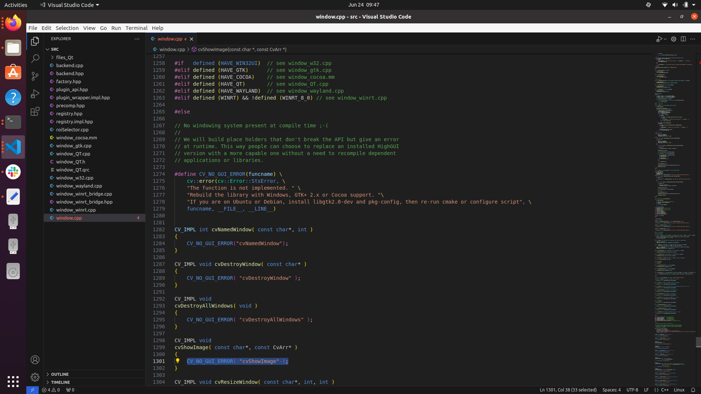

Recently, as part of my DDP work, I wanted to get the openCV library working with C++. I'm just going to list the steps followed to get there in the present article.
Setup:
Navigate to the directory where you want to download and build openCV.
# Install minimal prerequisites (Ubuntu 18.04 as reference)
sudo apt update && sudo apt install -y cmake g++ wget unzip
# Download and unpack sources
wget -O opencv.zip https://github.com/opencv/opencv/archive/4.x.zip
unzip opencv.zip
# Create build directory
mkdir -p build && cd build
# Configure
cmake ../opencv-4.x
# Build
cmake --build .
After successfully building, you should find libraries in the build/lib directories and executables in build/bin directory.
Install:
By default OpenCV will be installed to the /usr/local directory, all files will be copied to following locations:
/usr/local/bin - executable files
/usr/local/lib - libraries (.so)
/usr/local/cmake/opencv4 - cmake package
/usr/local/include/opencv4 - headers
/usr/local/share/opencv4 - other files (e.g. trained cascades in XML format)
Since /usr/local is owned by the root user, the installation should be performed with elevated privileges (sudo):
So within the build directory, enter:
sudo make install
in the build directory to install the opencv libraries.
Build/Compile C++ program using openCV:
Lets start with a simple program to convert an image to grayscale and display it. I captured a screenshot of the firefox homepage to test upon.
#include<iostream>
#include<vector>
#include<queue>
#include<opencv2/opencv.hpp>
using namespace cv;
using namespace std;
int main()
{
Mat img_grayscale = imread("test.png",0);
// Display the image.
imshow("grayscale image", img_grayscale);
// Wait for a keystroke.
waitKey(0);
// Destroys all the windows created
destroyAllWindows();
// Write the image in the same directory
imwrite("grayscale.jpg", img_grayscale);
return 0;
}
We then proceed to build it with make using cmake:
cmake_minimum_required(VERSION 3.16)
project(openCVtest)
add_executable(openCVtest tmp1.cpp)
find_package(OpenCV CONFIG REQUIRED)
target_include_directories(openCVtest PRIVATE ${OpenCV_INCLUDE_DIRS})
target_link_libraries(openCVtest PRIVATE ${OpenCV_LIBS})
Output:
Possible Hiccups:
1] 'cvshowImage' doesn't seem to work:
This problem seems to arise when you dont have a windowing system present on the system. The error log i got was:
terminate called after throwing an instance of 'cv::Exception'
what(): OpenCV(4.10.0-dev) /home/tomascj20/projects/robotics/profProjects/bijo/DDP/sensorFusion/opencv-4.x/modules/highgui/src/window.cpp:1301: error: (-2:Unspecified error) The function is not implemented. Rebuild the library with Windows, GTK+ 2.x or Cocoa support. If you are on Ubuntu or Debian, install libgtk2.0-dev and pkg-config, then re-run cmake or configure script in function 'cvShowImage'
So i navigated to this file called window.cpp. 
This is also validated by the log that appears when calling cmake --build .
We find the log to contain:
-- Checking for module 'gtk+-3.0'
-- No package 'gtk+-3.0' found
-- Checking for module 'gtk+-2.0'
-- No package 'gtk+-2.0' found
-- Checking for module 'gthread-2.0>=2.32'
-- No package 'gthread-2.0' found
After installing libgtk-3-dev, I rebuilt the openCV project. This time the log stated it found gtk+=3.0 .
-- Checking for module 'gtk+-3.0'
-- Found gtk+-3.0, version 3.24.20
-- Checking for module 'gtk+-2.0'
-- Found gtk+-2.0, version 2.24.32
-- Checking for module 'gthread-2.0>=2.32'
-- Found gthread-2.0, version 2.64.6
Now recompiling the program using cmake got me the desired grayscale image.
Cheers!